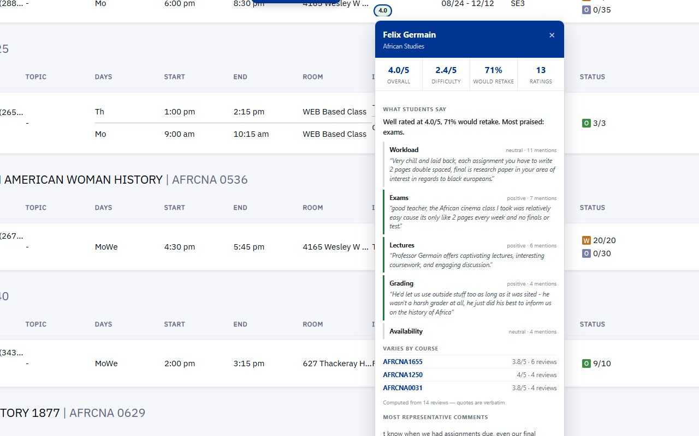

Professor Ratings for Pitt
Code
A Chrome extension that shows each instructor's RateMyProfessors rating next to their name in Pitt's class search. Click a rating to see what students say, summarized by a small language model (Qwen2.5-0.5B) that runs locally in the browser through WebGPU.
Pitt's class search is a PeopleSoft page that re-renders all the time, so the extension finds instructor cells six different ways and re-attaches whenever the table changes. Rating lookups go through a cached, rate-limited service worker.
JavaScript, Chrome MV3, WebGPU, Transformers.js, ONNX Runtime

A logistic regression model trained on 1.6 million tweets with TF-IDF features (81.8% accuracy), served by a FastAPI backend with single, batch and side-by-side endpoints. The React dashboard takes CSV uploads and shows word clouds and comparison charts. The whole thing runs in Docker.
Python, scikit-learn, FastAPI, React, Docker
The demo goes to sleep when nobody is using it, so the first load can take about a minute.
YouTube Sentiment Analyzer
Code
Compares the sentiment of a video's transcript with the sentiment of its comment section, using the YouTube Data API and a Naive Bayes classifier on TF-IDF features over 5,000+ comments per video.
Python, scikit-learn, YouTube Data API
Live Ticker Sentiment Trader
Code
Streams Reddit discussion about stock tickers, scores each post with VADER and a Hugging Face transformer model, and plots the sentiment for each ticker in a live desktop dashboard.
Python, PyTorch, Hugging Face Transformers, Reddit API